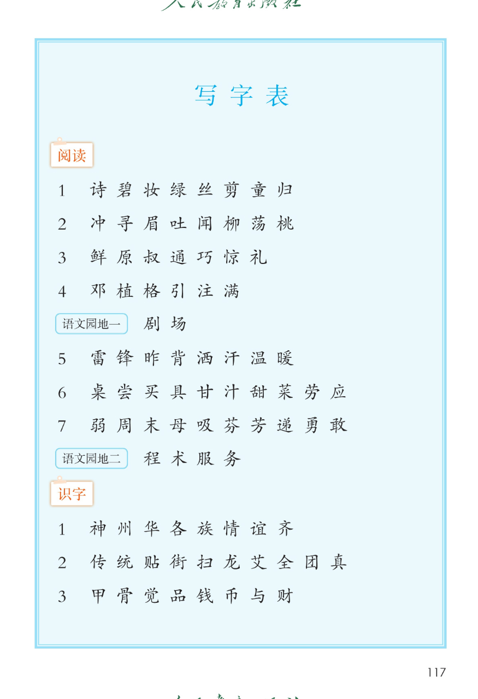
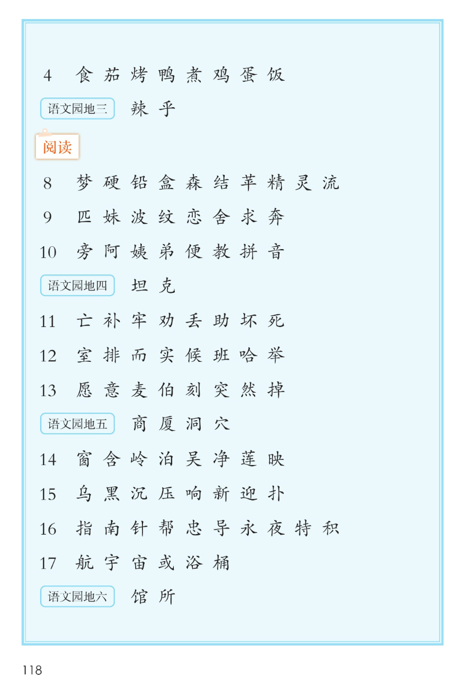
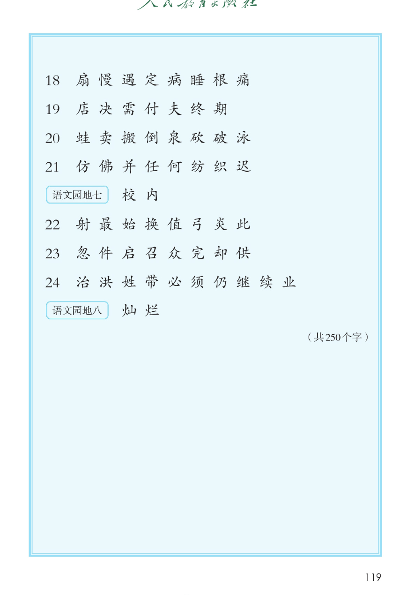

写 字 表
二年级下册 · 附录 · 课本第 117~119 页 · 点整行读整行，点单个字读那个字
课本标注：共 250 个字照录 249 字
怎么用：写字表收录全册要会写的字。复习时点一行听一遍，再点单个字跟读；写字时对照课本田字格，注意偏旁和笔顺的变化。
📋 写字表（按课本顺序，阅读 1~24 · 识字 1~4 · 语文园地一~八）
📖 课本原页

第 117 页 · 写字表（阅读 1~7 · 园地一~二 · 识字 1~3）

第 118 页 · 写字表（识字 4 · 园地三 · 阅读 8~17 · 园地六）

第 119 页 · 写字表（阅读 18~24 · 园地七~八 · 共 250 个字）